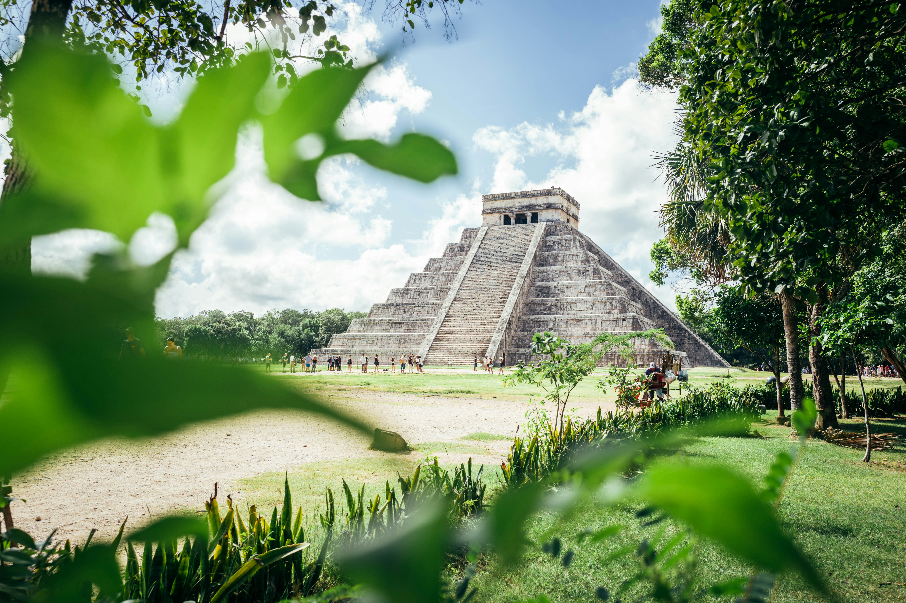
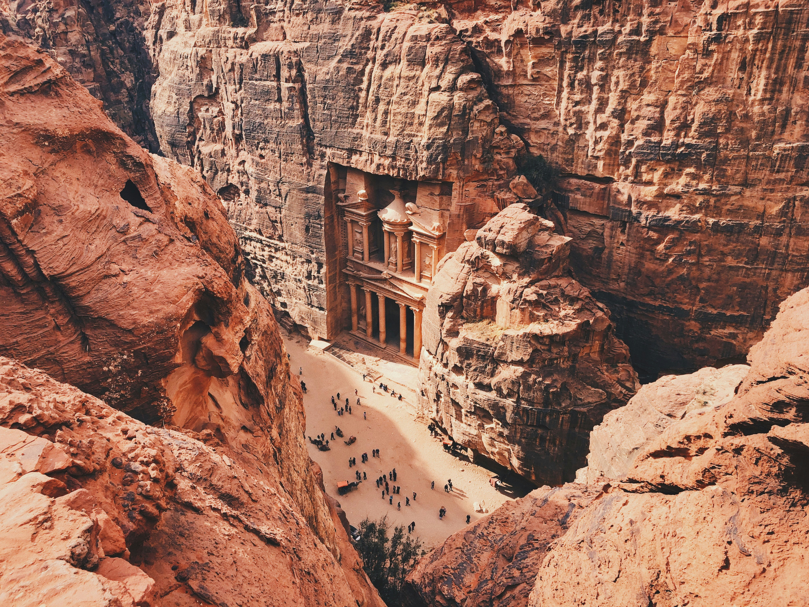
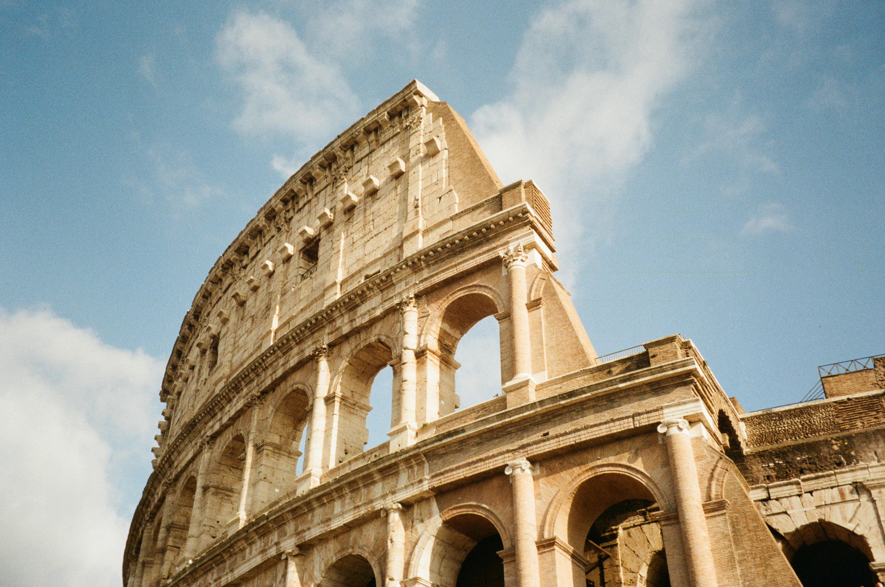
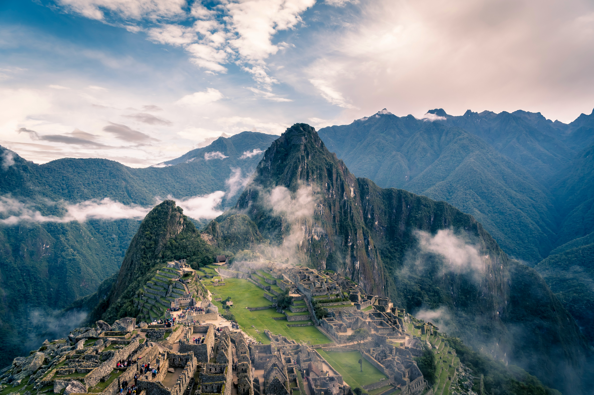
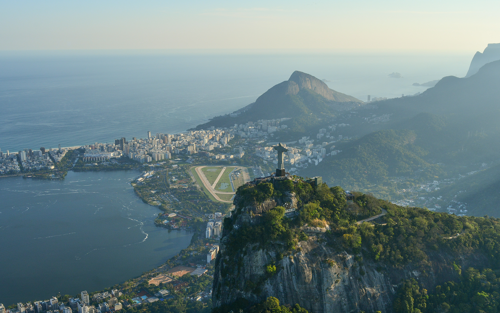
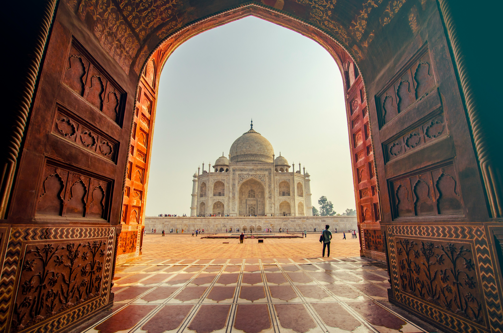

The Great Wall Of China
Beijing, China

Chichén Itzá
Yucatán, Mexico

Petra
Jordan

Colloseum
Rome, Italy

Machu Picchu
Andes Mountians, Peru

Christ The Redeemer
Rio de Jaeniro, Brazil

Taj Mahal
Agra, India